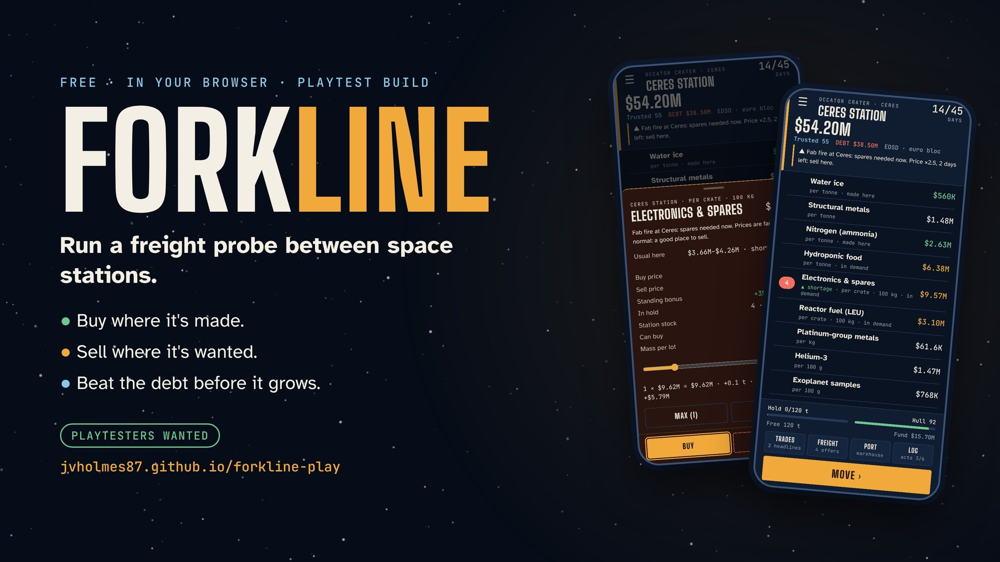
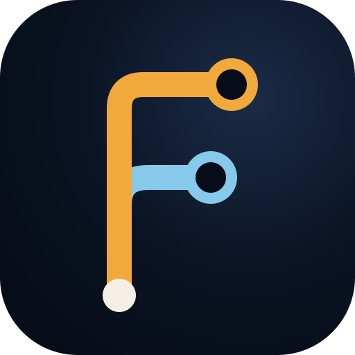
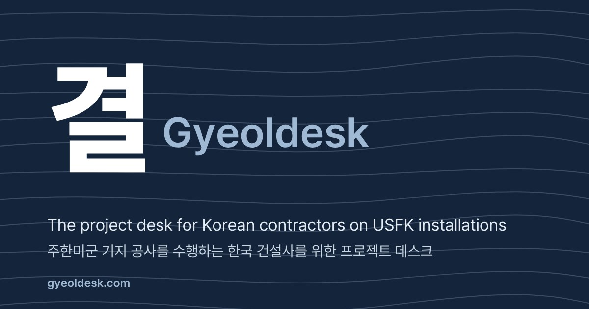

Jason V. Holmes
I build software and operating systems that connect requirements, workflows, data and evidence. My work spans construction management, small-business operations and applied research. I develop and publish small products alongside that work.
- Discipline
- Systems engineering
- Base
- Pyeongtaek, South Korea
- Background
- USAF civil engineering, 15 years: GIS, as-built records, drone inspection program
- Studying
- MS Information Technology, Systems Engineering concentration (UMGC)
- Last revised
- November 17, 2026
Shipped
Live products with the evidence behind them: what changed, how it was tested and what users said.


ForklineA free, turn-based space trading sim for phone and PC. Buy where goods are made, sell where they're wanted, and pay off a loan before the interest grows. Built to an E for Everyone standard to teach science, economics and entrepreneurship.
The public beta is playable in a browser. The case study records earlier seeded-bot experiments and tester-driven changes; accounts, cloud saves and Google Play remain future work.

Gyeoldesk
A bilingual Korean/English project desk for Korean construction contractors on USFK installations: a live weekly report, a contacts directory with approval authority, and progress photos served privately from the company's own Drive.
Every release goes to a preview site first and reaches production only with a written approval. A public build log records each day's updates, decisions and lessons.
In the queue
Projects underway but not near shipping. Status is honest: nothing here is claimed as built until it is.
| Project | What it is | Status |
|---|---|---|
| NeoState | Founder and creator of a community-governance infrastructure project: membership, accountable decisions and transparent shared resources, with a long-term goal of independent open-source adoption within existing U.S. law.Information-site preview deployed. Systems engineering documentation and testing underway. Base, native USDC, Safe and bounded AI assistance are planned integrations; governance and treasury functions are not yet implemented. Read the project brief | In development |
| FamilyLedger | A household and small-business ledger in development, building on SpendWise's expense, income, category, dashboard and CSV workflows.SpendWise was built by Leighton Tidwell, Jason Holmes and Eric Hill. FamilyLedger extensions remain planned; read the engineering case study and test evidence. | In development |
| Volunteer treasury workflows | Requirements and architecture for volunteer reimbursements, currency-conversion evidence, human approval controls and signed outputs. The current direction uses Google Workspace.Successor implementation and acceptance remain open in the reviewed record. Historical web-platform illustrations are separate from a working deployment. Explore the architecture case study. | In development |
| VIRT Command | A spatial interface for dated campaign records: a nearby-star atlas, console workspaces and a character prototype. An independent fan project and test bed for future engineering interfaces.Explore the project story and working demo. Prototype scope, original creator credits and recorded verification are explained on the project page. | In development |
| PISO-AID Bob 1 | A small uncrewed surface vehicle for supervised-autonomy research, the first step toward low-cost, shallow-draft cargo barges. Full-scale vessels are envisioned as crewed.Design records and interactive visual tools available; configuration reconciliation and physical verification remain ahead. No prototype built or water-tested. Read the design-stage case study | Design |
| Contract opportunity tracker | A planned tool to retrieve SAM.gov and Grants.gov opportunities and filter them for small contractors, reducing manual search. Integration and filtering behavior have not been verified.Architecture planned | Planned |
Research
Independent research artifacts connecting requirements, controlled evidence and small-organization operations. The studies are at different stages; scholarly novelty has not yet been established.
Federal Submittal Compliance Model
Turn obligations into traceable states, evidence and deadlines. Explore the model and its bounded measurements.
Explore the project → Research design · No fieldworkORB Readiness Research
How does a small supplier prove readiness for a specific opportunity? Explore the proposed evidence model.
Explore the research →Both artifacts are authored by Jason V. Holmes and published under CC BY 4.0. They are independent work, with no employer, university or government endorsement. A focused literature review comes before stronger novelty claims or expansion of the research instruments. Source snapshots reviewed 17 November 2026; this review did not repeat field measurements or inspect restricted records.
Professional experience & endorsements
Independent professional evidence connecting federal project delivery, requirements coordination and the systems I build today.
Project advisory — Seongbo Construction Industrial Co., Ltd.
July 2025 – March 2026 · Federal construction project support, South Korea
Provided project advisory and documentation support, including Requests for Information (RFIs), coordination of complex project requirements, stakeholder meetings and contract modification support.
Reported contract value increase: $1,265,049.91. In a signed recommendation dated March 17, 2026, Seongbo's president attributed the successful contract modification in part to my efforts and strategic support. The figure describes the increase in contract value, not personal revenue or independently negotiated savings.
The recommendation also recognized professionalism, reliability, confidentiality and meeting deadlines while working remotely.
Source: Letter of Recommendation, President of Seongbo Construction Industrial Co., Ltd. (March 17, 2026). Signed original available to qualified professional contacts upon request.
How I work
I spent 15 years in USAF civil engineering, managing geospatial records, as-built drawings and a drone inspection program. Now I do quality control and project coordination on federal construction work in South Korea, and am pursuing an MS in Information Technology with a Systems Engineering concentration at UMGC.
I build with AI-assisted coding. I set the requirements, make and log the decisions, run the tests and playtests, and approve every release. The AI implements under that control. Forkline is the public proof of that method.